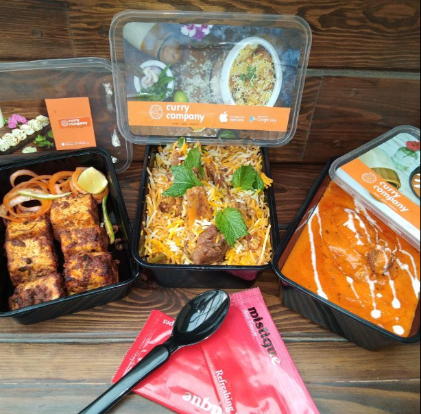
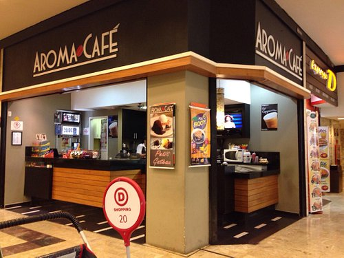
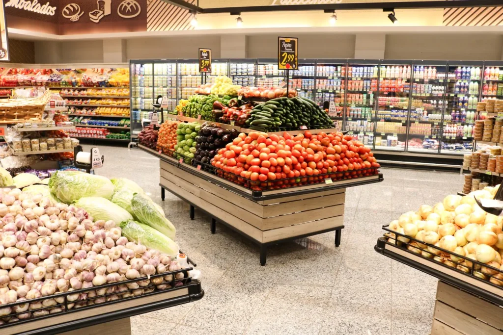
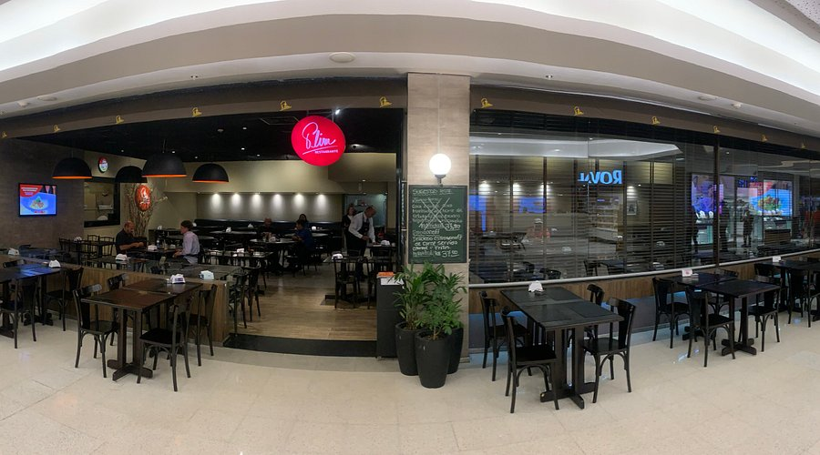

Análise de Dados do Airbnb em New York (2011-2019)
Este projeto teve como objetivo desenvolver uma análise crítica de dados do Airbnb sobre o mercado de locação de quartos na cidade de Nova York. A proposta consistiu na criação de um relatório em Power BI com dois dashboards interativos, contendo análises gráficas e detalhamentos em tabelas e matrizes.
Ferramentas Utilizadas:
- Power BI
- Power Query
- Git
- GitHub

Análise da Empresa Curry Company
Análise realizada com dados entre 11/02/2022 e 06/04/2022, considerando a Curry Company como modelo de negócio do tipo marketplace. O projeto abordou três visões principais: transações de pedidos, restaurantes e entregadores, com publicação final em painel estratégico desenvolvido em Streamlit.
Ferramentas Utilizadas:
- Python
- Streamlit & Streamlit Cloud
- Pandas
- Plotly
- Matplotlib
- Jupyter Lab
- Terminal
- Git
- GitHub

Análises de Dados — Rede de Cafeterias Aroma Café
Este projeto reúne análises sobre o desempenho de uma rede de cafeterias no período de janeiro a junho de 2023. O foco esteve na evolução do faturamento, identificação de padrões de consumo, projeções e recomendações estratégicas orientadas por dados.
Ferramentas Utilizadas:

Projeto SuperStore - Análise de Dados com Excel
Projeto desenvolvido com foco em retenção de clientes, segmentação por comportamento de compra e avaliação de desempenho de produtos e lojas. Toda a análise foi realizada no Excel, com ênfase em visualização e suporte à decisão.
Ferramentas Utilizadas:
Dashboard Analítico com SQL e IA
Dashboard de análise descritiva desenvolvido com apoio de IA, utilizando SQL, HTML, CSS e JavaScript. O projeto explora a construção de uma interface analítica com foco em apresentação visual e exploração de dados.
Ferramentas Utilizadas:
- Claude AI
- SQL
- HTML
- JavaScript
- CSS
- Git
- GitHub

Python - Análise, Manipulação e Publicação de Dados em Nuvem
Neste projeto, conceitos de programação em Python, manipulação de dados, pensamento estratégico e lógica de negócio foram utilizados para desenvolver um painel gerencial com métricas relevantes de uma empresa marketplace voltada a restaurantes.
Ferramentas Utilizadas:
- Python
- Streamlit & Streamlit Cloud
- Pandas
- Plotly
- Matplotlib
- Jupyter Lab
- Terminal
- Git
- GitHub
Análise de Dados de Vendas
Este projeto teve como objetivo desenvolver uma análise crítica de vendas para apoiar gestores na identificação das causas de queda no faturamento do último trimestre. A proposta envolveu exploração de indicadores, comparação temporal e suporte visual para tomada de decisão.
Ferramentas Utilizadas:
- Power BI
- Power Query
- DAX
- Git
- GitHub
Análise de Logística com Cálculo de OTIF
Análise consolidada do desempenho logístico, com respostas às perguntas exploratórias, comparação entre
semestres e avaliação executiva da operação.
Ferramentas Utilizadas:
- PowerBI
- DAX
- PowerQuery
- Excel
- Git
- GitHub